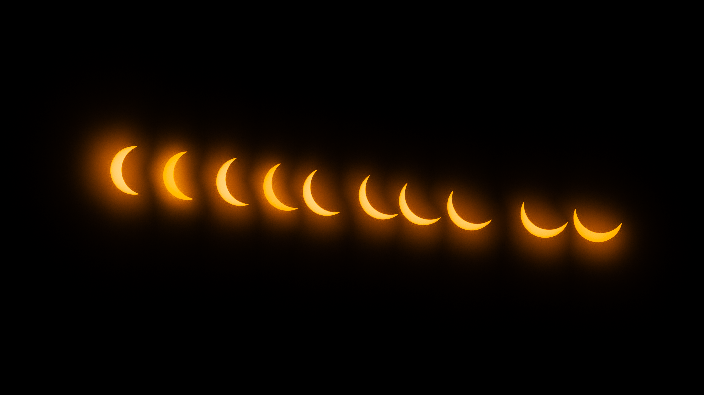

In 2022 I experienced my first astronomical event, the Geminid meteor shower. Ever since, I've been captivated with trying to capture the universe around us. Throughout my journey of astrophotography, I've learned reslience from the countless nights spent in the freezing winter cold; I've learned patience from the hours spent waiting in the dark for my camera to capture the night sky; I've learned how to learn on my own and how to experiment to find a new solution when things don't work out. Over the past 3 years, I've steadily honed my craft and captured images of celestial objects such as the Orion Nebula, Heart Nebula, and Tadpoles Nebula.


